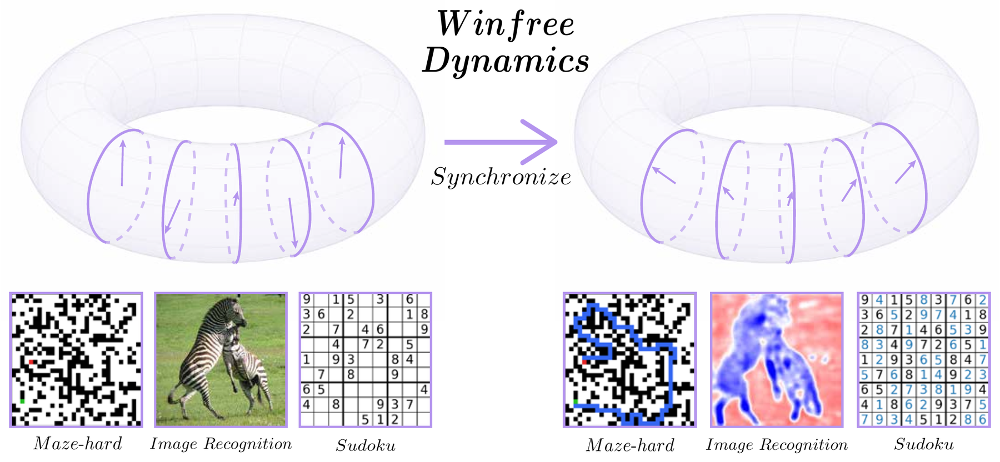
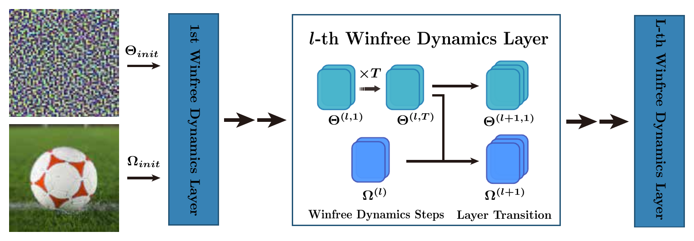
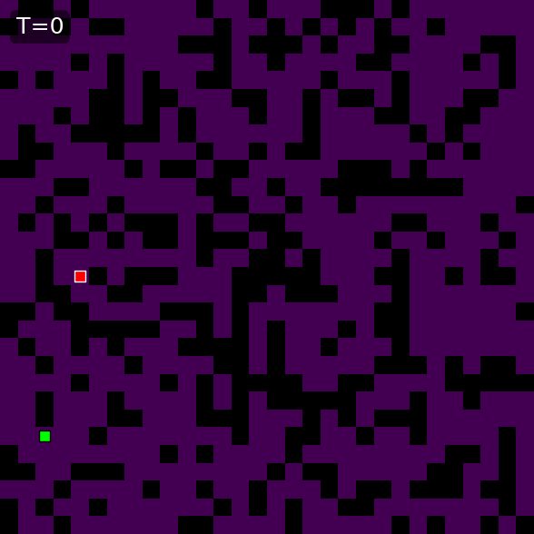
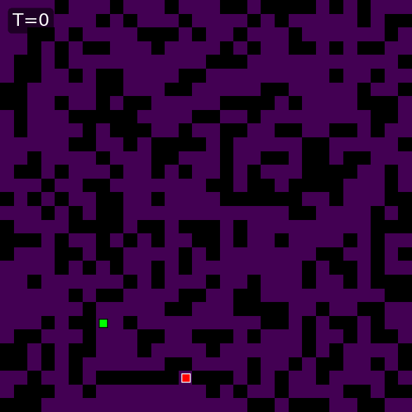
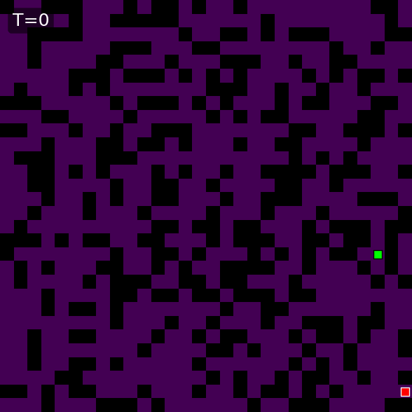
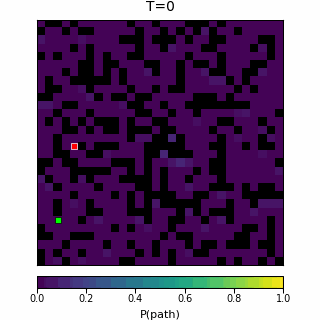
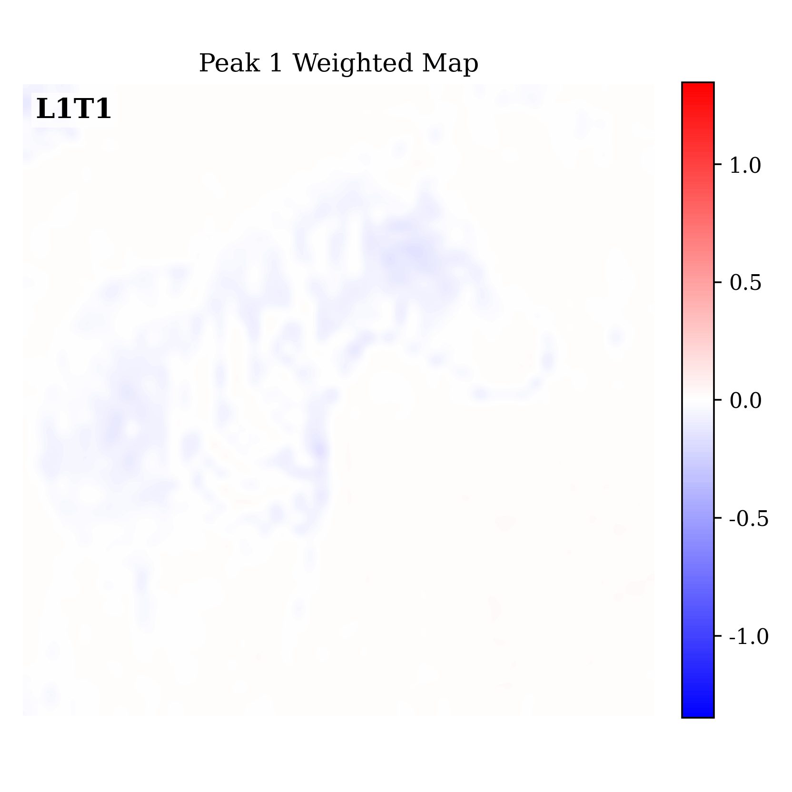
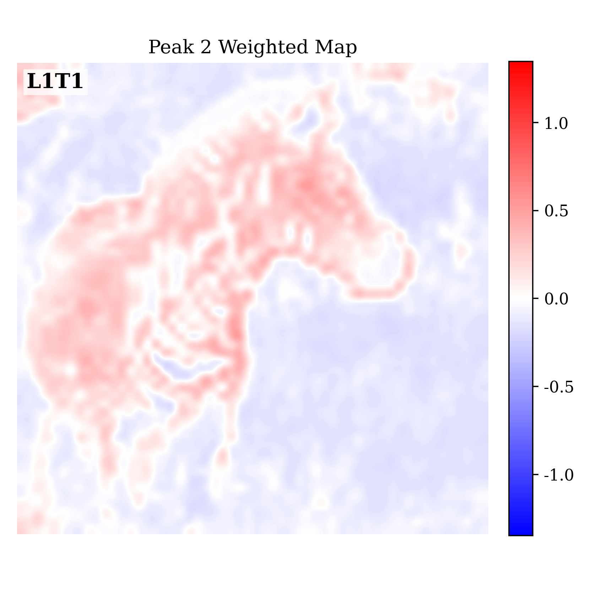

1 Shanghai Qi Zhi Institute
2 Tsinghua University
3 Shanghai Jiao Tong University
We introduce Winfree Oscillatory Neural Networks (WONN),
a dynamical neural architecture that evolves neural representations as phase
oscillators on the toroidal phase space \((S^1)^d\). Generalized Winfree
synchronization dynamics organize oscillators into structured collective states,
enabling scalable computation for image recognition and structured reasoning.

WONN evolves representations on the torus \((S^1)^d\).
To our knowledge, WONN is the first synchrony-based oscillatory architecture to scale competitively to ImageNet-1K.
On Maze-hard, WONN achieves 80.1% accuracy using only 1% of the parameters of prior state-of-the-art models.
Each oscillator has a phase \( \theta_i \), a natural frequency \( \omega_i \),
and coupling coefficients \( K_{ij} \) or \( c_{ij} \). The central distinction
is whether interactions depend on pairwise phase differences or on separable
sensitivity--influence functions.
WONN represents neural states as phase variables on a toroidal
manifold, with updates locally computed in the tangent space.
Key message.
Kuramoto dynamics is governed by relative phase differences, whereas
Winfree dynamics separates a receiving oscillator's sensitivity \(S(\theta_i)\)
from neighboring oscillators' influence \(I(\theta_j)\).
WONN turns this principle into a learnable neural architecture
on \((S^1)^d\).
Methods
Winfree Oscillatory Neural Architecture

Overview of the Winfree Oscillatory Neural Network.
WONN initializes phase and frequency states, repeatedly applies Winfree dynamics,
and updates both states through layer transitions.
WONN encodes the input into an initial frequency state
\( \Omega_{\mathrm{init}} \), while the phase state
\( \Theta_{\mathrm{init}} \) is randomly initialized. Each Winfree dynamics layer
performs \(T\) parameter-shared recurrent updates, followed by a layer-transition
update of both phase and frequency states. Through iterative synchronization,
WONN evolves structured oscillatory representations before prediction.
At the core of WONN is a discretized Winfree evolution. For each layer
\(l\), we perform \(T\) recurrent updates:
Here \( \theta_i^{(l,t)} \) denotes the phase of oscillator \(i\) at recurrent
step \(t\) in layer \(l\), \( \omega_i^{(l)} \) is its natural frequency,
\(S\) is a sensitivity function, \(I\) is an influence function, and
\(c_{ij}\) is the coupling coefficient between oscillators \(i\) and \(j\).
The recurrent steps share parameters within each layer, so the network behaves
as a controlled dynamical system over phase variables rather than as a purely
feed-forward stack.
Winfree dynamics differs from Kuramoto-type phase interaction by separating
the response of the receiving oscillator from the signal emitted by its
neighbors. In WONN, the receiving side is modeled by the sensitivity
function \(S\), while the sending side is modeled by the influence function
\(I\). This separation allows the interaction to depend not only on relative
phase differences, but also on the absolute phase configuration of the
oscillatory representation.
To capture structured spatial interactions, WONN partitions oscillators
into local groups \( \mathcal{G}_{p,q} \). Each group aggregates local phase
states into a shared group-level influence signal:
This mechanism induces hierarchical synchronization: oscillators coordinate
within local groups, while group-level influence signals communicate across
larger spatial regions. The coupling \(c_{ij}\) can be instantiated by local
convolution or global attention, allowing WONN to interpolate between
local oscillatory computation and long-range synchronization.
Image Experimental Results
WONN is evaluated on CIFAR-10/100 and ImageNet-100/1K. The tables report
accuracy and parameter count, comparing WONN with standard convolutional, transformer,
and synchrony-based baselines.
CIFAR-10 / CIFAR-100
Accuracy is reported as mean ± std over three seeds.
Model
CIFAR-10 Acc.
Params
CIFAR-100 Acc.
Params
ResNet-18
93.48 ± 0.16
11.17M
70.53 ± 0.10
11.22M
ResNet-50
94.22 ± 0.14
23.52M
73.54 ± 0.41
23.71M
ViT-T†
90.34 ± 0.18
5.36M
67.59 ± 0.44
5.38M
ViT-S†
93.43 ± 0.29
21.34M
71.18 ± 0.62
21.38M
ViT-B†
92.04 ± 0.25
85.15M
71.05 ± 0.40
85.22M
AKOrNattn
93.66 ± 0.17
4.60M
72.03 ± 0.34
4.62M
\(S(\theta_i)\)&\(I(\theta_i)\) as MLPs
WONN (Ch = 128 → 128)
94.55 ± 0.09
3.08M
73.77 ± 0.40
3.09M
WONN (Ch = 64 → 256)
95.12 ± 0.04
7.54M
75.12 ± 0.49
7.56M
WONN (Ch = 256 → 256)
95.24 ± 0.12
12.02M
76.20 ± 0.45
12.04M
\(S(\theta_i)\)&\(I(\theta_i)\) as trigonometric functions
WONN (Ch = 128 → 128)
94.50 ± 0.15
2.98M
74.48 ± 0.16
3.00M
WONN (Ch = 64 → 256)
95.08 ± 0.07
7.40M
75.81 ± 0.33
7.43M
WONN (Ch = 256 → 256)
95.26 ± 0.05
11.84M
76.17 ± 0.52
11.86M
ImageNet-100 / ImageNet-1K
WONN scales to ImageNet-1K with competitive accuracy and fewer parameters.
Model
ImageNet-100 Acc.
Params
ImageNet-1K Acc.
Params
ResNet-18
78.20
11.23M
69.73
11.69M
ResNet-50
81.18
23.71M
76.89
25.56M
ViT-S-16†
77.96
21.70M
75.54
22.05M
ViT-B-16†
76.36
85.87M
75.85
86.57M
AKOrNattn
80.08
4.62M
67.45
4.85M
\(S(\theta_i)\)&\(I(\theta_i)\) as MLPs
WONN (Ch = 128 → 128)
81.50
3.09M
–
–
WONN (Ch = 64 → 256)
82.04
7.56M
74.84
7.79M
WONN (Ch = 256 → 256)
82.88
12.05M
76.78
12.28M
\(S(\theta_i)\)&\(I(\theta_i)\) as trigonometric functions
WONN (Ch = 128 → 128)
81.76
3.00M
–
–
WONN (Ch = 64 → 256)
82.56
7.43M
–
–
WONN (Ch = 256 → 256)
82.22
11.87M
–
–
† ViT baselines use additional regularization such as CutMix and label smoothing.
Reasoning Experimental Results
On structured reasoning tasks, WONN uses oscillatory dynamics to form coherent
solutions over time. We report Maze-hard pathfinding and Sudoku solving results.
Maze-hard Pathfinding
Energy Voting selects the lowest-energy solution among 32 sampled trajectories.
Model
Accuracy
Parameters
LLMs
DeepSeek R1
0.0
671B
Claude 3.7 8K
0.0
?
O3-mini-high
0.0
?
Recurrent models
HRM
74.5
27M
TRM-Att (dihedral augmented)
85.3
7M
TRM-MLP (dihedral augmented)
0.0
19M
Other synchrony-based model
AKOrNattn
36.2
1M
WONN
76.2
0.396M
WONN (Energy Voting)
80.1
0.396M
Sudoku Solving
Results are averaged over five runs on 1,000 test boards.
Model
Accuracy
Parameters
SAT-Net
98.3
0.618M
RRN
99.8
0.201M
R-Transformer
100.0
0.211M
Transformer
98.6 ± 0.3
16.87M
HRM
99.7 ± 0.2
27.28M
AKOrNattn (T = 16)
99.8 ± 0.1
2.98M
\(S(\theta_i)\)&\(I(\theta_i)\) as trigonometric functions
WONN (T = 16)
100.0 ± 0.0
1.58M
Experimental Analysis
Beyond final accuracy, WONN exposes interpretable dynamics: candidate
paths synchronize over recurrent steps, phase distributions organize into two
complementary modes, and interaction energy provides a useful diagnostic.
Synchronous Pathfinding on Maze-hard

Example 1

Example 2

Example 3
WONN initially activates multiple diffuse path fragments. As the oscillatory
dynamics evolve, compatible fragments synchronize into a coherent path while
inconsistent candidates are suppressed.

HRM path probability evolution on Example 1
Comparison with HRM on the same Maze-hard instance
For the first WONN example above, we visualize the first 12 H-block updates of
HRM as evolution steps. HRM remains largely inactive during the early stages,
begins to generate irregular predictions around \(T=4\), and subsequently
undergoes an abrupt transition around \(T=6\) that recovers most of the correct
path. The remaining steps only introduce minor refinements. This abrupt,
insight-like behavior contrasts sharply with the progressive path formation
exhibited by WONN.
WONN exhibits a characteristic two-peak phase distribution.
Interpretation
The two synchronized phase modes capture complementary object structures.
Effect
Coarse global regions are separated from fine local details and boundaries.

First dominant phase peak

Second dominant phase peak
Layer-wise evolution of the weighted maps associated with the two dominant
phase peaks in WONN on image recognition. Left: weighted map corresponding
to the first dominant phase peak. Right: weighted map corresponding to the
second dominant phase peak. Here \(L\) denotes the layer index and \(T\)
denotes the Winfree dynamics step within that layer. Panels are arranged
according to the actual forward trajectory, from \(L1T1\) to \(L6T3\).
Across layers, the phase-weighted responses are progressively refreshed and
reorganized, evolving from weak local activations toward more coherent
global semantic structures through the recurrent synchronization dynamics.
Interaction Energy as a Diagnostic
Energy Voting selects the lowest-energy sampled trajectory.